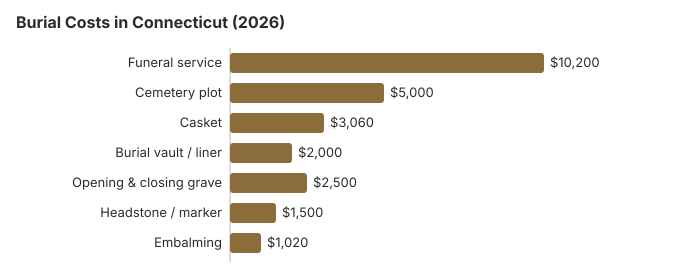

Burial Costs in Connecticut (2026)
For Connecticut families choosing burial in 2026, the honest pricing conversation starts with three numbers: the $10,200 funeral service average, the $5,000 cemetery plot average, and the $500-$5,000 headstone range. Add vault, opening-and-closing, casket and a headstone and the complete Connecticut picture runs $23,260 to $27,760. Here is how those numbers get built, and where they can bend lower.
Connecticut Burial Costs by Item
| Item | Average Cost | Range |
|---|---|---|
| Funeral service | $10,200 | $7,650 – $13,260 |
| Cemetery plot | $5,000 | $2,500 – $10,000 |
| Casket | $3,060 | $1,020 – $8,160 |
| Burial vault / liner | $2,000 | $800 – $10,000 |
| Opening & closing grave | $2,500 | $500 – $3,000 |
| Headstone / marker | $1,500 | $500 – $5,000+ |
| Embalming | $1,020 | $500 – $1,500 |
About the Connecticut burial figures: they are estimates from our cost model, not prices collected from Connecticut funeral homes or cemeteries, so compare real quotes with them and do not treat them as a quote or advice. Read our method and the disclaimer.

Put every cemetery charge together with the funeral home bill and a Connecticut burial comes to roughly $23,260 to $27,760 on our estimates, with the spread set mostly by the casket, plot and marker you pick.
Choosing a Type of Burial in Connecticut
- Learn about green burial
- Mausoleum entombment: Above-ground placement in a mausoleum; Connecticut crypt prices are not in the table, so ask each cemetery.
How to Reduce Burial Costs in Connecticut
Where a Connecticut family can save on a burial:
- Compare cemetery prices directly: Cemeteries are not covered by the FTC Funeral Rule but most in Connecticut will share a price sheet on request.
- Ask about seasonal charges: if a cemetery charges more for winter burials or holds the body for a spring interment, that charge should be in its written price list, so ask for the list before the date is set.
- Denominational and municipal cemeteries: a church or town cemetery may price plots differently from a commercial memorial park, so get written prices from more than one kind of Connecticut cemetery.
- Look beyond the nearest cemetery: plot prices are set by each cemetery, so a family that can travel a little farther than the closest Hartford-area grounds may find a lower price for the same plot type.
How Connecticut Burial Compares With the Region
Some Connecticut cemeteries handle cold-weather interments differently, for example by holding the body until spring. Nothing in the FTC Funeral Rule covers the cemetery itself, so ask each cemetery on your list in writing what a winter burial changes and what it costs; the funeral home's part of the bill still has to follow its General Price List.
Burial Resources
- Headstone & Monument GuideCosts, types, and buying tips
- Best Online Casket RetailersCaskets bought online often cost less
- Funeral Consumers AllianceNonprofit consumer advocacy for funeral pricing
- Best Burial InsuranceCompare plans to cover burial expenses
- Green Burial OptionsEco-friendly and natural alternatives
Compare Funeral Costs
- Direct Cremation: Most Affordable OptionNFDA 2023 median $2,645 with a family-supplied container (latest available)
- Cremation vs. Burial Cost ComparisonSide-by-side price comparison to help you decide
- How to Compare Funeral PricesStep-by-step guide to getting the best price
- Cheapest Funeral OptionsLower-cost alternatives, with typical price ranges
- Average Funeral Cost in 2026National cost breakdown with real prices
- Funeral Cost BreakdownEvery line item explained: know what you're paying for
Frequently Asked Questions
What do Connecticut families spend on burial?
On our figures the funeral home's share of a Connecticut burial is about $10,200 and a plot about $5,000. After those come the casket ($3,060), the vault ($2,000) and opening the grave ($2,500), while a marker can run from $500 to $5,000, for a usual total of $23,260 to $27,760.
Do I need a vault for burial in Connecticut?
Grave liners (cheaper than full vaults) often satisfy the same requirement; ask the Connecticut cemetery what it accepts before paying $2,000 for a vault. Vault prices in Connecticut range from $800 to $10,000 depending on material and brand.
What are the cheapest burial options in Connecticut?
Direct burial is the lowest-cost route: the funeral home handles the body, paperwork and transport, and burial follows without viewing, embalming or a ceremony, so you avoid most of the roughly $10,200 a full Connecticut funeral costs on this site's estimates. A simple casket bought from an outside seller can cut more, because the FTC Funeral Rule bars a funeral home from charging a fee to use it.
Ask town-owned and church cemeteries for prices, since plots and opening fees vary widely from the $5,000 plot estimate on this page. Eligible veterans can be buried at the State Veterans Cemetery in Middletown or a VA national cemetery at no cost for the grave; see our veteran burial benefits guide and green burial options.
How do cemetery prices differ across Connecticut?
Each Connecticut cemetery sets its own prices, and Connecticut has no state agency that licenses cemeteries. Most are owned by towns, churches or nonprofit cemetery associations, which by law cannot be run for private gain (Conn. Gen. Stat. § 19a-296). Ask each one for its bylaws as well as its prices, since the bylaws set the rules for lots, markers and who may open a grave.
Two state rules help. A cemetery association must approve an annual financial statement, and an interested party can ask the probate court to order its disclosure. At the time of any sale it must also give you its dispute resolution procedure in writing, with notice that you can complain to the Department of Public Health or your local health director (OLR Report 2017-R-0089).
Once I add every line item, what does burial actually cost in Connecticut?
A complete burial in Connecticut (funeral service ($10,200) + plot ($5,000) + casket ($3,060) + vault ($2,000) + opening-and-closing ($2,500) + headstone ($500-$5,000)) totals $23,260 to $27,760 in practice. Comparing two or three Connecticut funeral homes and two or three cemeteries independently is the single most reliable way to bring that number down.
Is green burial available in Connecticut?
Yes. Hillside Cemetery in Wilton has a natural burial section called Cedar Meadow, with graves about four feet deep, no vault, only biodegradable materials and no upright headstones. The volunteer group Green Burial Connecticut (ctgreenburial.org) keeps a list of other cemeteries that allow it, including Hanover Cemetery in Sprague and Fountain Hill Cemetery in Deep River.
Burial on private land is more limited. Apart from older or properly sited cemeteries, Connecticut law bars a burial within 350 feet of a home unless a public road lies between them or the body is in a concrete or other impermeable vault, which rules out a true green burial close to a house (summarized in the legislature's OLR Report 2017-R-0089).
More for Connecticut
Connecticut's disinterment permit comes from the town
In Connecticut the permit to open a grave comes from the town, not the state. The local registrar of vital statistics in the town where the body is buried, or where the death happened, issues it. A Superior Court order can take its place. Only a licensed embalmer or funeral director, or someone named in the court order, can apply, and the permit has to name both the current grave and the new one (Conn. Gen. Stat. § 7-67; checked October 29, 2026).
- Communicable disease: if the death was caused by a communicable disease, no permit is issued without the local director of health's approval and direction.
- Without consent: opening a grave without the consent of the spouse or near relatives is a crime under state law.
Burial rules and help in Connecticut
The Connecticut Department of Public Health (860-509-7603) licenses the funeral homes that arrange burials in Connecticut. It can also tell you which Connecticut office handles cemetery complaints.
Connecticut families cannot do every step of a burial themselves. The Funeral Consumers Alliance reads Conn. Gen. Stat. §§ 7-62b, 7-65a and 7-69 as requiring a licensed funeral director to file the death certificate, move the body and get the disposition permit, and the grave itself is opened and closed by the Connecticut cemetery.
A Connecticut burial needs a disposition permit. If you switch to cremation instead, a 48-hour wait applies (Conn. Gen. Stat. § 19a-323).
For a Connecticut burial, the DSS funeral and burial allowance is capped at $1,800 and falls as contributions pass $3,400; the claim has to be filed within a year, and Connecticut has no county government to ask instead. (Source: Connecticut DSS.)
For Connecticut veterans, the plot and marker in a national cemetery are free, which can remove thousands from a burial bill. In Connecticut, state veterans cemetery: Connecticut State Veterans Cemetery (860-616-3688) (source: VA National Cemetery Administration). VA runs no national cemetery in Connecticut, which leaves the Middletown state cemetery as the in-state choice for an eligible veteran.
Next steps for a burial in Connecticut
- Get the funeral home's General Price List and the Connecticut cemetery's own price sheet before you agree to a burial.
- Ask the Connecticut cemetery for its rules on grave opening times, vaults and markers.
- Ask Connecticut DSS how much of the $1,800 remains for the cemetery once family contributions are counted.
- For a veteran, ask Connecticut State Veterans Cemetery about eligibility before buying a private plot.
- If a Connecticut funeral home gives you misleading burial prices, you can complain to the state at 860-509-7603 at no cost.